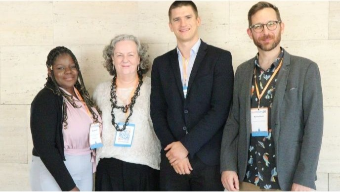

Reflective Journal 2
OpenEHR conference was great! What added to the greatness was the wonderful occurrence that the entire clinical modelling fellowship cohort could meet and that we were able to do poster presentations for our work.
 Working on my project has been fun, a little frustrating at times but always interesting. I think it’s great when what you are working on something that provides the intrinsic motivation to continue, to paraphrase a fellow clinical modeler who has been doing this for much longer than I have, it hasn’t gotten boring. And openEHR had such a diverse offering of all the frontiers that’s the openEHR community is exploring. So, when saw a session about the digitization of the International Certificate of Vaccination or Prophylaxis (ICVP) – I was like OpenEHR, Infectious Diseases and WHO! If you have read my project brief OpenEHR is not a WHO digital health standard, and so while there are many standards that WHO is actively promoting for use as a part of the Digital Adaptation Kit(DAK), openEHR is not one the list.
From before the conference I had gotten a taste of what to expect, from Xabier’s query on Discourse about modelling red flags. This was an interesting discussion because just a couple of weeks earlier I hit upon a similar concept, but mine were called “danger signs”. Although not quite as Shakespearean the conclusion of our modelling session was “What is in a name? That which we call a Danger Sign by any other name would still be a symptom.” And I hadn’t given much thought to it beyond that, but such a seemingly small thing evolved into a lively pre-conference session, because clinical modelling is a very nuanced art.
Day 1 of the conference was like a callback to Dr Seref Arikan’s presentation on how to use AI to keep up with openEHR. But more than that, the space for AI in OpenEHR is expanding way beyond simple the brainstorming process or streamlining a workflow. AI isn’t just a tool to elaborate complex concepts and the thoughts just aren’t moving to the fore for consideration. The community is using AI in many weird and wonderful ways. A very corny attempt at using the OpenEHR Ontology of Recorded Information (Beale & Heard, 2007) is that the growing use of AI in the openEHR community is an OBSERVATION, was viewed as a point in time occurrence during the modelling process, but it has become necessary to represent AI use as repeatable instances —reflecting changes, and adaptation in how the community views the use of AI. But, and it is a big but AI needs to be used responsibly and should not override this community of real people with lived experiences that we have a vested interest in openEHR, the patient, and providing quality healthcare.
Speaking of ontologies, my supervisor has been very meticulous in ensuring that I/we tackle that elephant and get it into little bitesize pieces. Throughout the course of the fellowship, my mind keeps going back to the “elephant in the room”, my supervisor has really got me thinking about all types of elephants! Whether it is introducing openEHR to the stakeholders who will be assisting in the reviews, or engaging with the WHO to share the results of the initial review and modelling.
My project focuses on a digital public good that is assumed to be completely open and standards based, and to some extent it is, except for – the data. To apply a concept from Value Based Health Care, the true value of standardized data, is enabling information technology platforms to exchange data that preserves its clinical meaning. For the DAK, it was apparent from the initial work that there were considerations on the terminologies, the software and the data exchange, but the meaning of the data is going to get lost in the fray. Ensuring that the meaning of that data remains the same is something that is not a part of the framework for the Digital Adaptation Kit. The goal is to ensure that there is no unwarranted variation in the data so that ultimately there is no unwanted variation in care.
I have appreciated all the hands-on experience that I am getting as part of my fellowship, I have been sitting in many modelling sessions, and review sessions. These add such a great layer of information to all that is involved in publishing an archetype on the CKM. There is so much to learn, so much that cannot be gained from reading alone. Clinical modelling is a very nuanced activity, there is a certain fear of creating a bad archetype or a bad template. The dreaded fear of semantic debt and dirty data that we delved into in one of the more recent felllowship sessions, is something that haunts me in my sleep. It may have something to do with the massive template of the antenatal care (ANC) record that came out of my work on the DAK.